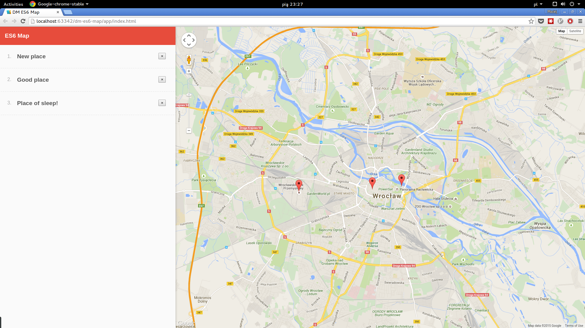

6a. Zmień komunikację między mapą a listą na eventy.
Potrzebujesz obieku, który będzie przechowywał listę handlerów i odpalał akcje
6b. Dodaj możliwość usunięcia markera z poziomu listy

6c. Stwórz klasę EventEmitter, po której dziedziczyć będą widoki i modele extra